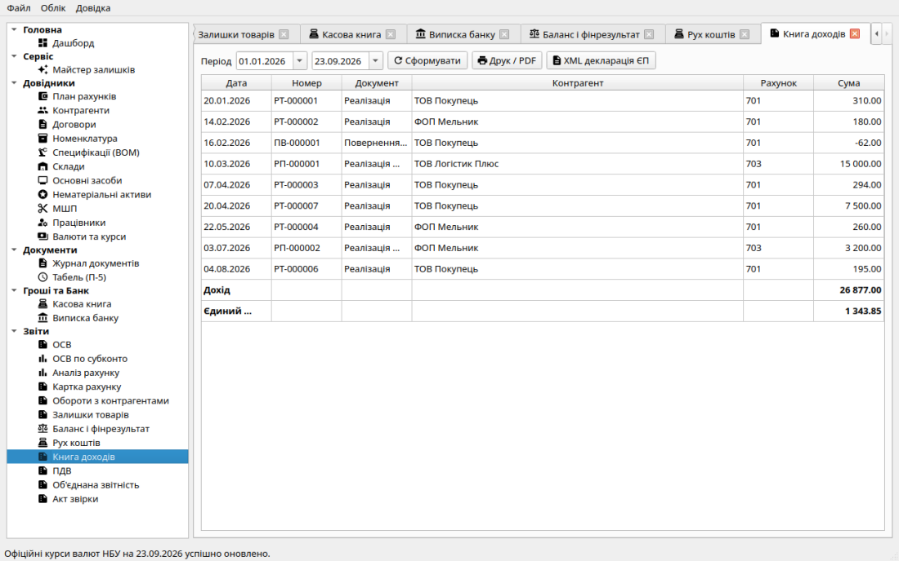
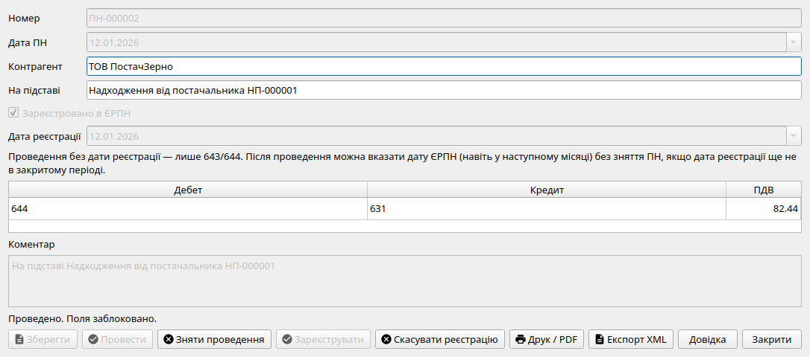
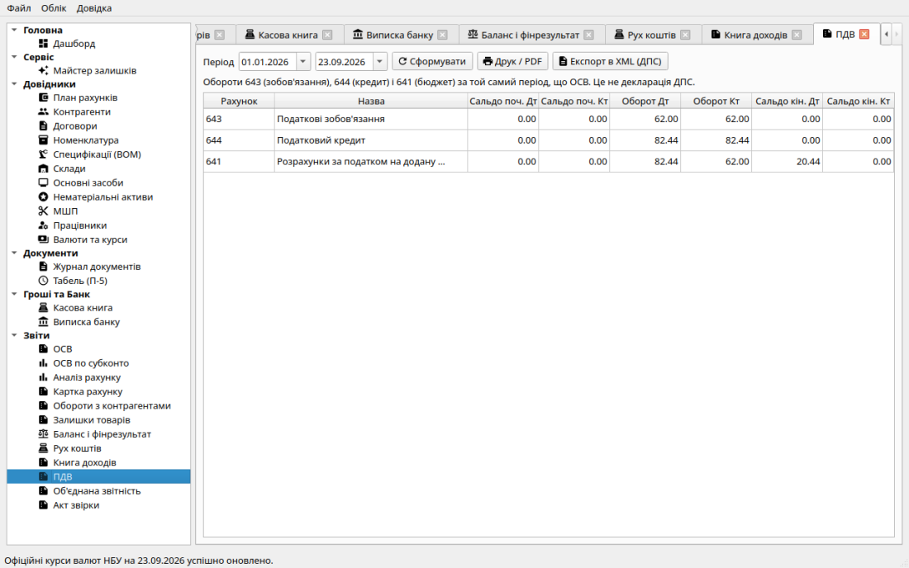
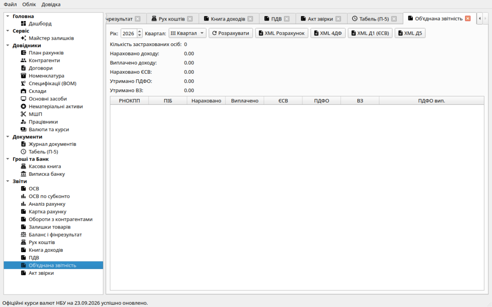

Податковий облік: Книга доходів та адміністрування ПДВ
Система «Фінік» забезпечує роздільний та точний облік податкових
зобов'язань як для спрощеної системи оподаткування (єдиний податок), так і
для платників податку на додану вартість (ПДВ).
1. Книга обліку доходів платника єдиного податку
Для підприємств та підприємців на спрощеній системі оподаткування дохід
формується за касовим методом та методом первинних документів відповідно
до Податкового кодексу України:
-
Формула доходу: сума кредитових оборотів субрахунків
701 («Дохід від реалізації готової продукції») та
703 («Дохід від реалізації робіт і послуг») за мінусом дебетового
обороту 701 при оформленні повернень товарів покупцями.
-
Виключення регламентних операцій: документ «Фінансовий результат»
при закритті місяця автоматично виключається з книги доходів,
запобігаючи спотворенню бази.
-
ПДВ не є доходом: податкові зобов'язання з ПДВ (субрахунок 643)
не включаються в книгу — дохід розраховується в чистому вигляді.
-
Розрахунок податку: ставка єдиного податку задається у
Картці підприємства (наприклад, 500 bp =
5%). Єдиний податок розраховується як
Дохід × Ставка.

Книга доходів: період, підсумок доходу й єдиного податку. «XML
декларація ЄП» — F0103308 (ФОП) або J0103508 (юрособа); для ФОП також ВЗ
1% (R23/R25) і рядок 13 з попереднього кварталу.
2. Податок на додану вартість (ПДВ)
Облік ПДВ активується встановленням прапорця «Платник ПДВ» у Картці
підприємства (базова ставка 20% = 2000 базисних пунктів).
План рахунків для обліку ПДВ
-
Папка 64 «Розрахунки за податками й платежами»: група
субрахунків;
-
641 «Розрахунки з бюджетом за ПДВ»: чисте сальдо розрахунків з
бюджетом (податкове зобов'язання до сплати або від'ємне значення до
відшкодування);
-
643 «Податкові зобов'язання»: непідтверджені реєстрацією в ЄРПН
податкові зобов'язання перед бюджетом;
-
644 «Податковий кредит»: податковий кредит, очікуваний до
підтвердження реєстрацією постачальником.
Золоте правило Фініка: рахунки 641, 643 і 644 змінюються
виключно через документ «Податкова накладна»! Звичайні накладні
реалізації та акти не роблять прямих проводок на 641 рахунок.
Правило першої події та виписка ПН
Податкова накладна (ПН) виписується кнопкою
«На підставі» первинного документа:
-
Відвантаження товару чи надання послуги: створюється вихідна ПН
із проводкою Дт 361 (або 681) Кт 643 на суму нарахованого
зобов'язання.
-
Отримання передоплати (авансу) від покупця: банківський платіж
або ПКО на субрахунок 681 є першою подією. Створюється вихідна ПН:
Дт 681 Кт 643.
-
Контроль повторного нарахування: якщо на аванс 681 вже була
складена ПН, то при наступному відвантаженні товару
Перша подія вже зафіксована — система не створює дублюючих
зобов'язань.

Форма податкової накладної: реквізити контрагента, поле «Договір» з
накладної-підстави, ставка ПДВ, статус та дата реєстрації в ЄРПН,
кнопки експорту XML для M.E.doc.
Реєстрація в ЄРПН та відображення в бюджеті
Дата виписки ПН і дата фактичної реєстрації в ЄРПН рознесені на різні
поля:
-
Поки податкова накладна не зареєстрована в ЄРПН, сума залишається на
рахунку 643 (для зобов'язань) або 644 (для кредиту).
-
При натисканні кнопки «Зареєструвати в ЄРПН» вказується дата
реєстрації, і система формує фінальну проводку в бюджет:
- Вихідна ПН: Дт 643 Кт 641;
- Вхідна ПН від постачальника: Дт 641 Кт 644.
-
Зсув періодів: січневу податкову накладну можна зареєструвати в
лютому навіть після того, як січень закрито — проведення на 641 рахунок
сформується датою реєстрації в ЄРПН у відкритому лютому!

Звіт «Відомість ПДВ»: моніторинг дебетових і кредитових оборотів
субрахунків 643, 644 та розрахунків з бюджетом 641.
3. Об'єднана звітність (ПДФО + ЄСВ)
Розділ «Об'єднана звітність» зводить зарплату / відпускні /
лікарняні за квартал.
- XML Розрахунок — J/F0500111 (рядки R01–R05).
-
XML 4ДФ — J/F0510411, поля рядків таблиці. Нараховано — з
документів нарахування зарплати; виплачено — якщо є проведений
банківський платіж або видатковий касовий ордер «на підставі» цього
нарахування.
-
XML Д1 (ЄСВ) — J/F0510111 по кожному місяцю кварталу з
нарахуваннями (категорія ЗО, база, сума ЄСВ).
-
XML Д5 — J/F0510511, трудові відносини: працівники з прийомом
і/або звільненням у кварталі (дати з картки працівника).
Перед збереженням виконується структурна перевірка DECLAR (C_DOC /
XSD-ідентифікатор). Повні XSD з реєстру ДПС у дистрибутив не вкладені —
експорт не замінює подачу: фінальну валідацію й здачу робіть у кабінеті
ДПС / M.E.Doc. Додаток Д6 і повна XSD-валідація — у плані.

Підсумки кварталу та експорт XML: Розрахунок, 4ДФ, Д1, Д5.